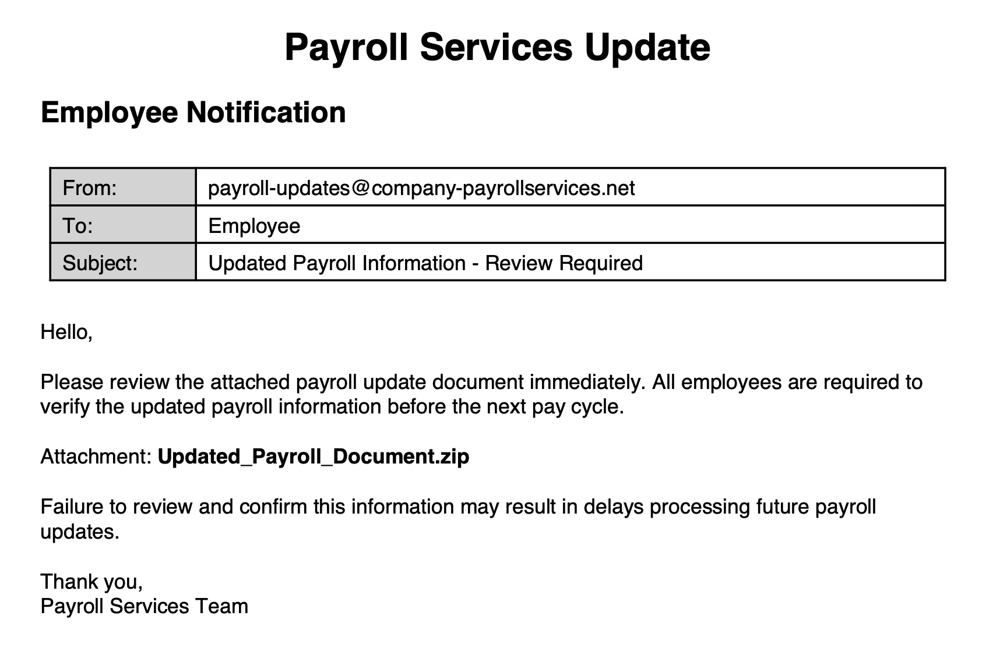
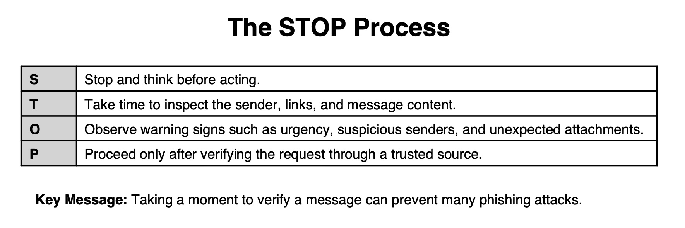

Think Before You Click
Every day, cybercriminals use email, text messages, phone calls, and fake websites to trick people into revealing information, transferring money, or compromising workplace systems. Learn how to recognize phishing attempts, evaluate evidence, and respond safely.
How To Use
Estimated Time: 20–25 minutes
- Learn how phishing attacks work
- Identify common phishing tactics and warning signs
- Analyze realistic workplace scenarios
- Practice evaluating suspicious messages
- Complete a final assessment to demonstrate mastery
Learning Objectives
- Define phishing
- Identify indicators
- Distinguish messages
- Apply verification
Why Phishing Matters
Workplace Example: An HR employee receives an urgent request to change an employee’s direct deposit information before payroll closes. The request appears legitimate, but it is fraudulent. The employee’s paycheck is redirected to a criminal-controlled account.
Consequences for Individuals
- Identity theft
- Financial fraud
- Account compromise
Consequences for Organizations
- Payroll fraud
- Data breaches
- Operational disruption
- Reputational damage
Poll
Have you ever received a suspicious email?
What Is Phishing?
Phishing is a social engineering attack that attempts to trick people into revealing information, clicking malicious links, opening harmful attachments, transferring money, or taking other unsafe actions.
How Phishing Works
- Attacker impersonates a trusted source
- Message creates urgency or trust
- Recipient takes action
- Information, money, or access is compromised
Types of Phishing
Email Phishing
Mass-distributed phishing emails.
Spear Phishing
Targeted messages aimed at specific individuals.
Smishing
Phishing attacks delivered through text messages.
Vishing
Phishing attacks delivered through phone calls.
Formative Assessment #1
You receive a text message stating that your package delivery failed and that you must click a link within 24 hours to avoid cancellation. What type of phishing attack is being used?
Warning Signs
STOP and CHECK
- Urgency: Pressure to act immediately
- Unexpected Request: Especially involving money or credentials
- Suspicious Sender: Misspellings or unusual domains
- Links & Attachments: Unexpected files or destinations
- Sensitive Information Requests: Passwords or financial information
- Independent Verification: Verify through trusted channels

Which indicator most strongly suggests this message may be phishing?
Formative Assessment #2
An email claims your Microsoft account will be disabled within one hour unless you verify your password. Which warning sign is most concerning?
Email A

Email B

Which email appears legitimate?
Review the evidence before making your decision.
What should Maria do next?
Review the evidence before making your decision.

What should David do?
Formative Assessment #3
You receive an unexpected attachment titled "Updated Benefits Information." What should you do first?
STOP Process

A message demands immediate action. What is the FIRST step in the STOP process?
Verification Strategies
Which verification method is safest?
Report It
You receive a suspicious message. What should you do?
Key Takeaways
Which action best summarizes what you have learned?
Review Challenge
Scenario 1: Which indicator should concern Maria most?
Scenario 2: Which piece of evidence should be reviewed first?
Scenario 3: What is the safest next action?
Summative Assessment
Passing Score: 80% (8 of 10 correct)
Answer the questions below and then calculate your score.
Completion Dashboard
✓ Defined phishing and its risks
✓ Identified phishing indicators
✓ Distinguished legitimate and phishing messages
✓ Applied verification strategies
🏆 Threat Detective
📧 Email Analyst
🛡 Cyber Defender
Certificate of Completion
Recognizing and Avoiding Phishing Attacks
Support • Privacy • References
Original e-learning module developed by Brittan Cook for WGU D299